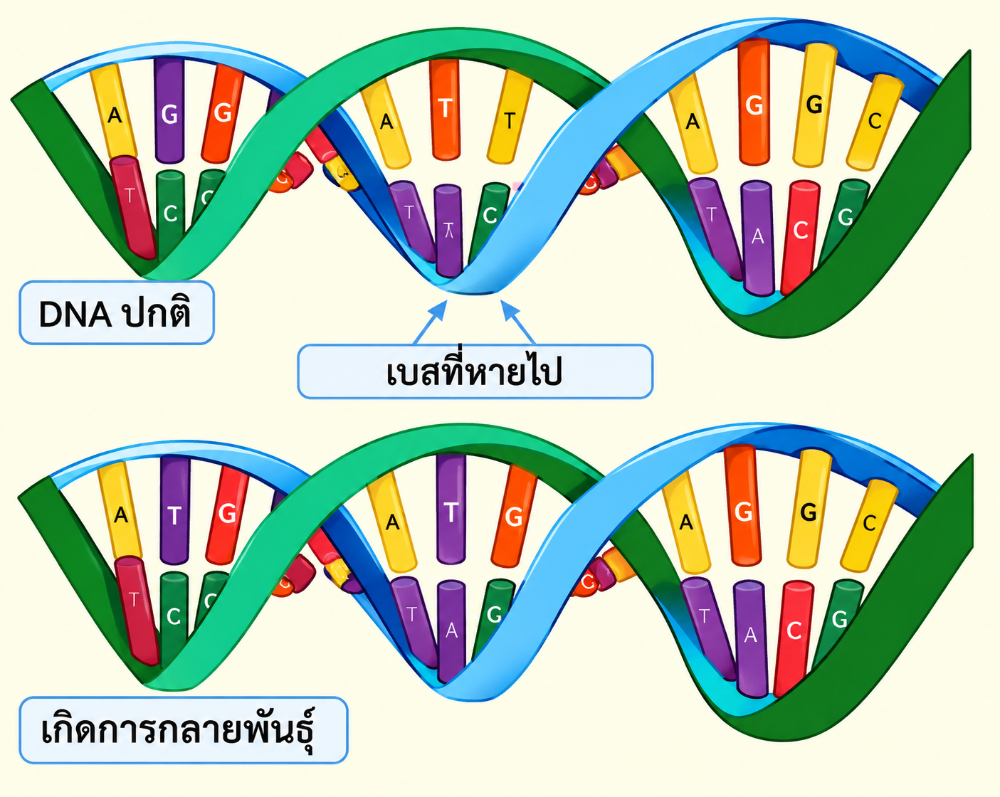

การกลายพันธุ์ (Mutation)
การกลายพันธุ์ (Mutation) คือ การเปลี่ยนแปลงของสารพันธุกรรม เช่น DNA หรือโครงสร้างและจำนวนโครโมโซม ซึ่งทำให้ข้อมูลทางพันธุกรรมเปลี่ยนแปลงไปจากเดิม การกลายพันธุ์อาจเกิดขึ้นเองตามธรรมชาติจากความผิดพลาดระหว่างการจำลอง DNA หรือเกิดจากปัจจัยภายนอก เช่น รังสี สารเคมี และปัจจัยจากสิ่งแวดล้อมบางชนิด
การกลายพันธุ์เปรียบเสมือนการ “พิมพ์ผิด” ของรหัสพันธุกรรม ซึ่งอาจทำให้ข้อมูลบางส่วนเปลี่ยนแปลงไป การเปลี่ยนแปลงนี้อาจส่งผลต่อการสร้างโปรตีนและการทำงานของเซลล์ ขึ้นอยู่กับตำแหน่งและลักษณะของการกลายพันธุ์
การกลายพันธุ์แบ่งออกเป็น 2 ระดับหลัก ได้แก่
1. การกลายพันธุ์ระดับยีน
เป็นการเปลี่ยนแปลงลำดับเบสใน DNA ของยีน เช่น การแทนที่เบส การเพิ่มเบส หรือการขาดหายของเบส การเปลี่ยนแปลงดังกล่าวอาจทำให้โปรตีนเปลี่ยนแปลงหรือไม่เปลี่ยนแปลงก็ได้ ตัวอย่างเช่น การกลายพันธุ์ของยีนบางชนิดที่เกี่ยวข้องกับโรคธาลัสซีเมีย2. การกลายพันธุ์ระดับโครโมโซม
เป็นการเปลี่ยนแปลงโครงสร้างหรือจำนวนของโครโมโซม เช่น การขาดหายของชิ้นส่วนโครโมโซม การเพิ่มซ้ำของชิ้นส่วนโครโมโซม และการเปลี่ยนแปลงจำนวนโครโมโซม ตัวอย่างเช่น ไตรโซมี 21 ซึ่งเกี่ยวข้องกับดาวน์ซินโดรม ผลของการกลายพันธุ์มีหลายรูปแบบ ได้แก่ ผลเป็นกลาง: ไม่ส่งผลต่อการทำงานที่สังเกตได้ของสิ่งมีชีวิต ผลเป็นประโยชน์: อาจทำให้สิ่งมีชีวิตมีลักษณะที่เหมาะสมกับสภาพแวดล้อมมากขึ้น ผลเป็นโทษ: อาจทำให้เกิดความผิดปกติหรือเพิ่มความเสี่ยงต่อโรคบางชนิด เช่น มะเร็งบางประเภท การกลายพันธุ์มีความสำคัญต่อวิวัฒนาการ เนื่องจากเป็นแหล่งกำเนิดความหลากหลายทางพันธุกรรม ทำให้สิ่งมีชีวิตมีลักษณะแตกต่างกัน และอาจช่วยให้เกิดการปรับตัวต่อสภาพแวดล้อมที่เปลี่ยนแปลงไป